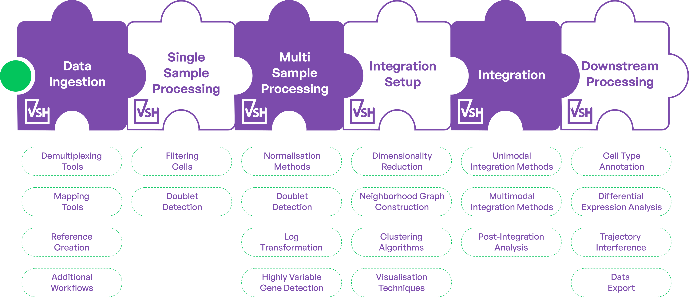
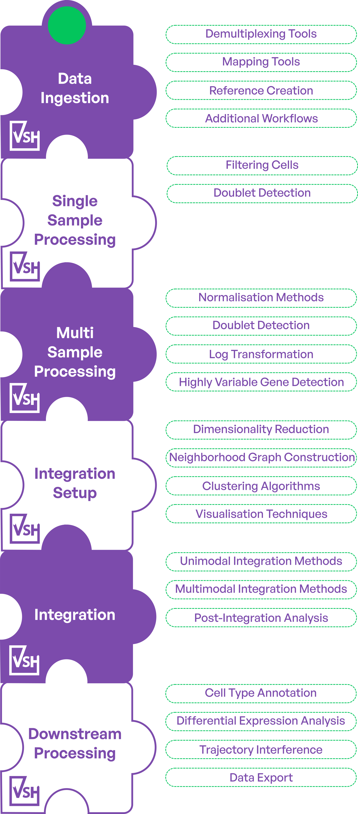

Biotech Research Collaboration, RNA-seq analysis, Next-generation sequencing, Computational biology, Differential gene expression
The Viash Catalogue provides a comprehensive collection of high-quality, industry-ready bioinformatics modules and data workflows, ready for immediate use and deployment.
All modules and workflows are available via Viash Hub.
Our workflows meet strict professional standards, often developed in large client projects, ensuring enterprise-level reproducibility, reliability, and performance
All modules in the Viash Catalogue are standardized, interchangeable building blocks that seamlessly connect, allowing you to combine and scale components across any workflow.
All modules are built with regulatory alignment from the ground up, ensuring your workflows meet industry standards and compliance requirements out of the box.
Every module and workflow is open-source and free to use, fostering community-driven development, full transparency and unrestricted accessibility for all users.


Transform your data workflows with Data Intuitive’s complete support from start to finish.
Our team can assist with defining requirements, troubleshooting, and maintaining the final product, all while providing end-to-end support.
Contact Us